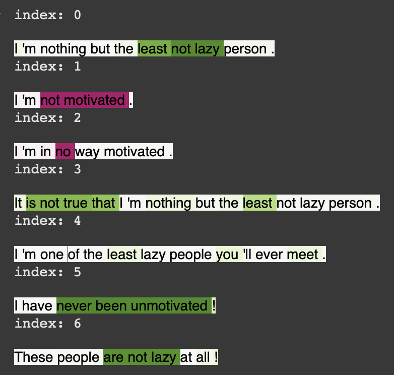
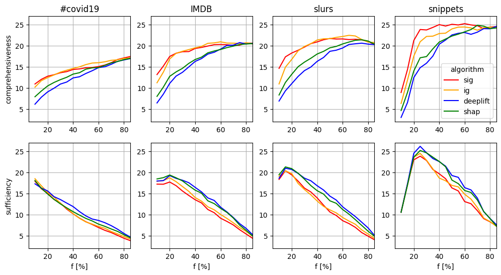

Explainable NLP with Integrated Gradients
Fine-tuned BERT, RoBERTa, and BERTAgent on the Slurs dataset, women's accounts of verbal harassment labeled for shame, fear, and sexual objectification. Applied Integrated Gradients via Captum for word-level attribution, benchmarked against Sequential IG, DeepLIFT, and GradientSHAP using comprehensiveness, sufficiency, and approximation error. Developed a custom rendering pipeline with SpaCy to handle negations and subword tokens. Validated findings with social psychologists, and applied the same method to a small-dataset scenario using deliberate overfitting to surface class-defining keywords. arXiv preprint (2025), submitted for journal publication.

